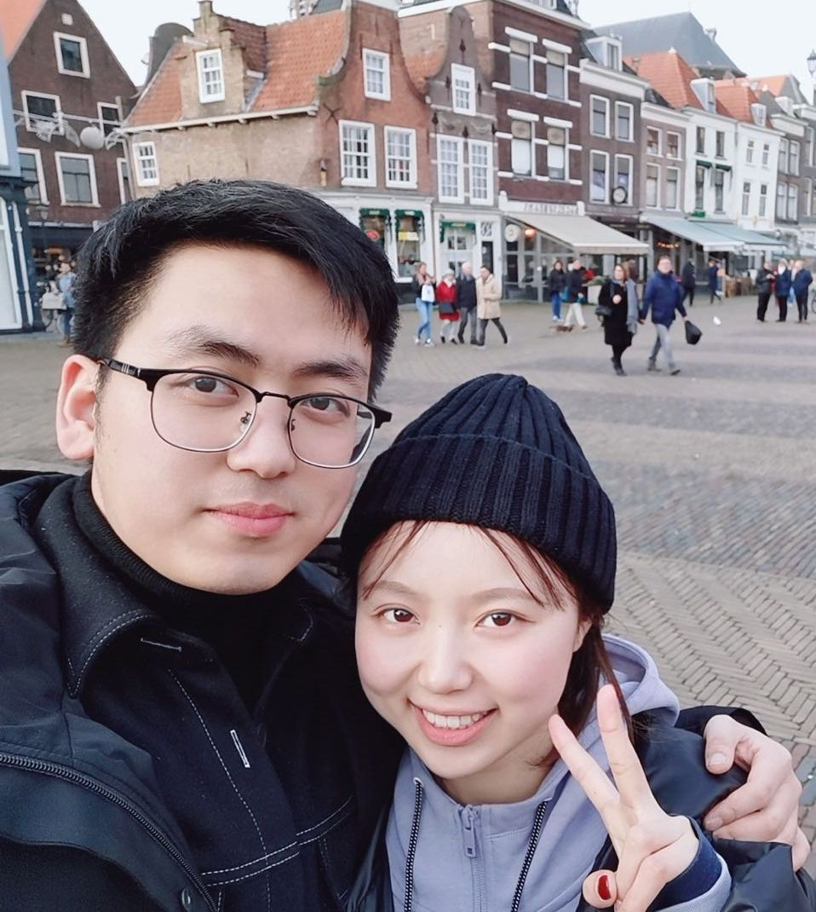
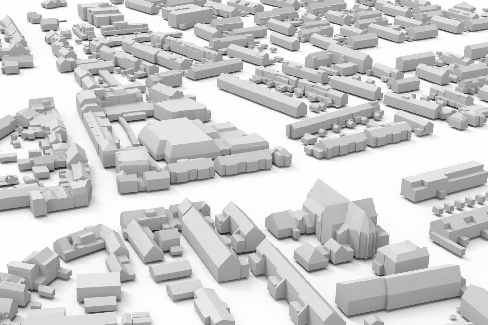
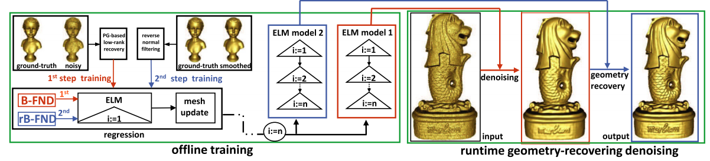
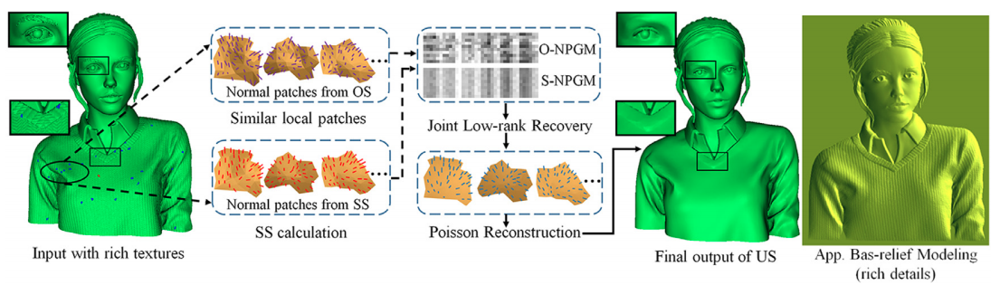
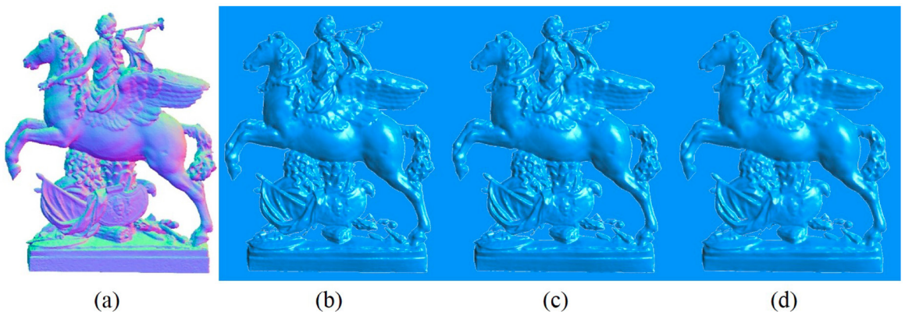
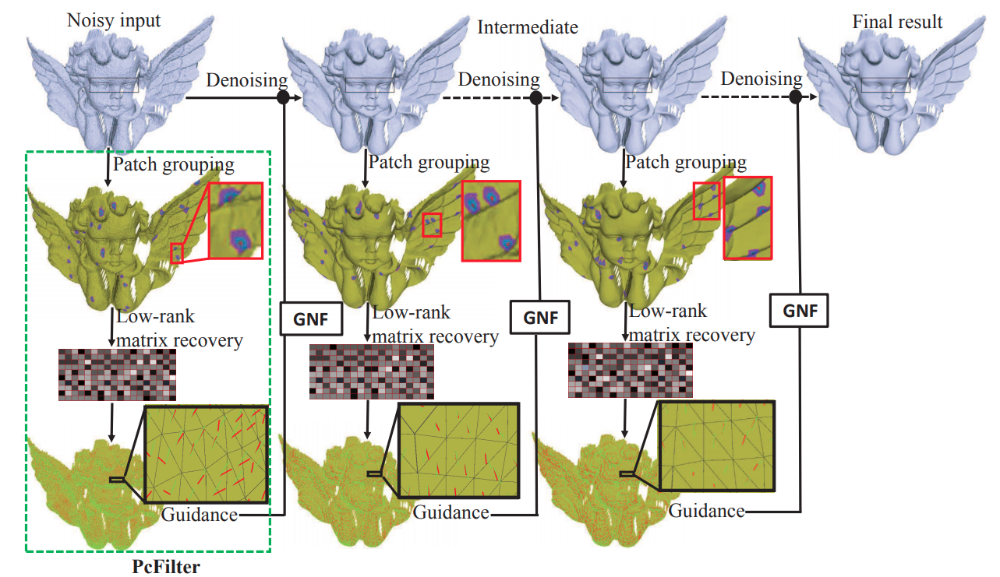

Jin HuangPh.D. Candidate
3D Geoinformation Group
|
 |


Biography [CV]
I am currently a third-year Ph.D. in the Faculty of Architecture and the Built Environment, Delft University of Technology (TU Delft), supervised by Prof. Jantien Stoter and Prof. Liangliang Nan. Previously, I received the M.Sc. from NUAA in 2019 and B. Eng. from NUAA in 2016.
My research interests include 3D reconstruction, point cloud processing.
Selected Publications [Google Scholar]
|  | City3D: Large-scale Urban Reconstruction from Airborne Point Clouds Jin Huang, Jantien Stoter, Ravi Peters, Liangliang Nan Remote Sensing, 2022. |

|
Mesh Defiltering via Cascaded Geometry Recovery. Mingqiang Wei, Xianglin Guo, Jin Huang, Haoran Xie, Fu Lee Wang, Jing Qin. Computer Graphics Forum (Pacific Graphics), 2019. [paper] |
|  | Data-driven Geometry-recovering Mesh Denoising. Jun Wang , Jin Huang , Mingqiang Wei, Haoran Xie, Fu Lee Wang and Jing Qin. Computer-Aided Design (SPM), 2019. [paper] |
|  | Structure-guided Shape-preserving Mesh Texture Smoothing via Joint Low-rank Matrix Recovery. Honghua Chen∗ , Jin Huang∗ , Haoran Xie, Jing Qin, Yanwen Guo, Mingqiang Wei and Jun Wang. Computer-Aided Design (SPM), 2019. [paper] |
|  | Mesh-based Computation for Solving Bas-relief Reconstruction from Editable Normal Image. Jin Huang, Jun Wang, Honghua Chen, Xianglin Guo, Mingqiang Wei and Jing Qin. Measurement Science and Technology, 2019. [paper] |
|  | Mesh Denoising Guided by Patch Normal Co-filtering via Kernel Low-rank Recovery. Mingqiang Wei, Jin Huang, Xingyu Xie, Ligang Liu, Jing Qin and Jun Wang. IEEE Transactions on Visualization and Computer Graphics (TVCG), 2018. [paper] |
Reviews
| ICCV, CVPR, ECCV, Computers & Graphics, ISPRS, IEEE Access, 3D Geoinfo |
© Jin Huang | Last updated: May 2022